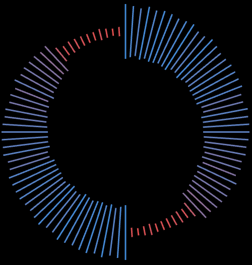
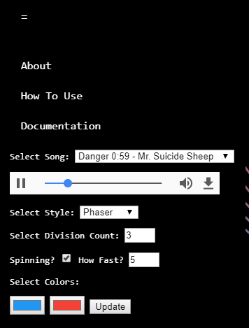
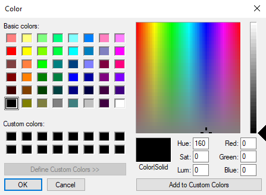
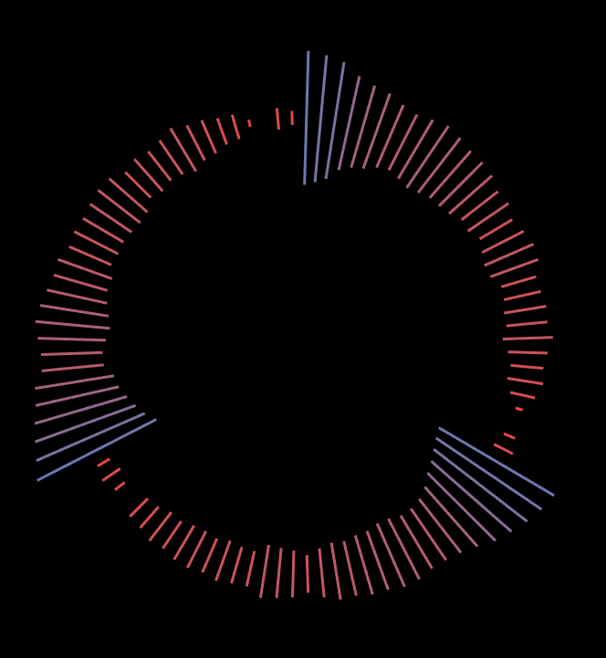
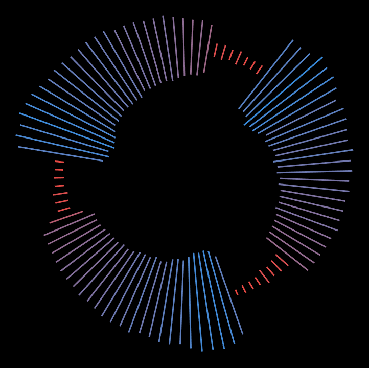
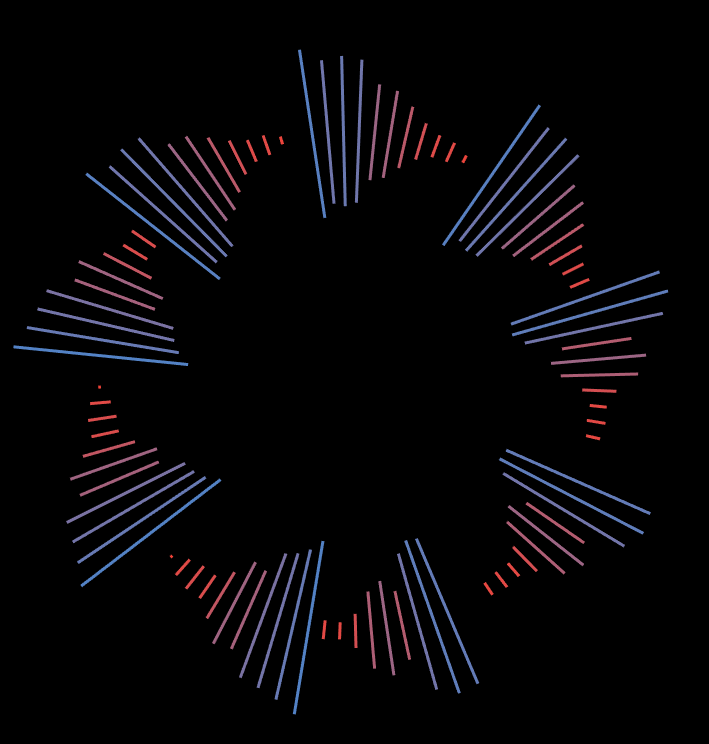

I. High Concept
Visualize audio files by creating dynamic geometry based on the frequencies.
II. Genre
Music, application
III. Platform
Desktop only
IV. Story
N/A
V. Aesthetics
Graphic style
- Abstract
Sound
- Multiple soundtracks that loop.
VI. Gameplay
Mechanics
- The user can change the color of the frequencies, as well as changing how fast the visualizer spins, how many divisions are there, and different modes of the visualizer.
Controls
- Mouse
New User Experience
- There is a nagivation bar which contains all the options that the user can change and manipulate.
Player Learning
- In order to interact with the application, the user will be able to choose from multiple visualizer modes they want as well as changing the colors of the frequencies. The user can also manipulate how many divisions the visualizer displays, and how fast it spins.
VII. Concept Art
This is how the audio visualizer will look like as a default.
 The user will be able to change the colors of the frequencies like so.
Mode 1: Balanced
Mode 2: Classic
Mode 3: Phaser
The user will also be able to switch between different modes of the visualizers.
IX. About the Developers
Aiden Thinn is a second year Game Design and Development major at RIT.
- Skill set - Programming, Painttool SAI, Photoshop, Music, 2D Animation
- Interests - Video games, Creative Writing, RPGs, Doodling
John Shull is a second year Game Design and Development student interested in making the most out of his time at RIT.
- Skill set - Programming, C#, C++, Unity
- Interests - Adobe Illustrator, Video Games, RPGs